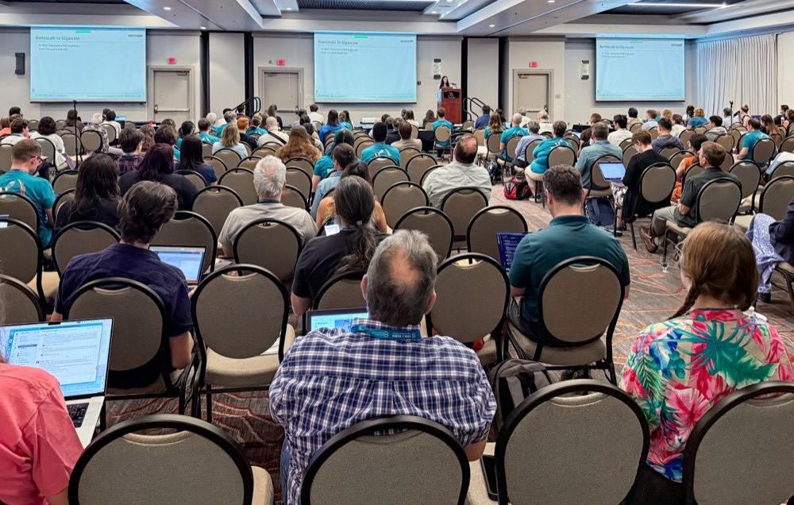
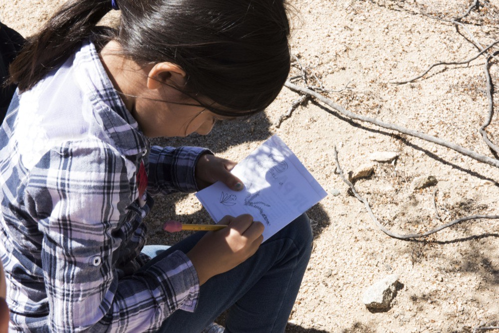

Staying on Track
Once your project starts, keep checking in with your team and your partner. Talk about what is going well, what isn't, and update your plan if things change.

Communicating with Your Partner
Send your partner updates on your progress and ask for feedback along the way. Write down important decisions so your team can remember them later.
